Экспедиция Шерегеш
Кооперативная игра-путешествие: команда исследует Шерегеш, проходит через тайгу, ручьи, болота и горные подъёмы, посещает гору Зелёную и вместе поднимается на Мустаг.
Оглавление
1. Идея игры
Экспедиция Шерегеш — это цифровая кооперативная игра для 2–6 участников. Игроки не соревнуются между собой, а проходят общий маршрут.
Сеттинг: команда приезжает в Шерегеш, выходит из посёлка, исследует окрестности, доходит до горы Зелёной и завершает поход на вершине Мустаг.
2. Цель партии
- Все участники стартуют в посёлке Шерегеш.
- Каждый участник должен посетить промежуточную цель: гору Зелёную.
- После этого каждый участник должен дойти до главной цели: вершины Мустаг.
- Когда все участники на Мустаге и у каждого отмечена гора Зелёная, команда побеждает.
 Цель 1: гора Зелёная
Цель 1: гора Зелёная
Это первая обязательная горная цель маршрута. Вход на клетку стоит 4 очка движения.
После посещения горы Зелёной участник может идти к финальной цели.
 Цель 2: Мустаг
Цель 2: Мустаг
Это финальная горная цель маршрута. Вход на клетку стоит 6 очков движения.
Участник считается завершившим маршрут только если до Мустага он уже посетил гору Зелёную.
Возвращаться на базу после главной цели не нужно.
3. Подготовка партии
Игроки
Выберите количество участников: от 2 до 6. Затем назначьте каждому участнику роль.
В одной команде роли не повторяются: это помогает сохранить кооперативный баланс.
Сложность маршрута
Учебная тропа — меньше сложной местности.
Кедровый маршрут — стандартный режим.
Большой подъём — больше болот и подъёмов.
Размер карты
Малая — 4×4 клетки.
Средняя — 5×5 клеток.
Большая — 6×6 клеток.
Карта
Карта бывает трёх размеров: малая, средняя и большая. Максимальный размер — 36 клеток. В начале партии открыта стартовая клетка посёлка, остальная карта закрыта и открывается по мере исследования. Если первым ходит Разведчик, его постоянная способность сразу открывает соседнюю закрытую клетку.
На карте есть три ключевые точки: посёлок, гора Зелёная и Мустаг. Также на случайных клетках спрятаны артефакты.
4. Ход игрока
- Проверьте активного игрока. Его карточка подсвечена в списке команды.
- Можно использовать способность роли. Нажмите кнопку «Способность роли», если хотите применить особое действие.
- Бросить шаг. Нажмите кнопку «БРОСИТЬ ШАГ». Кубик даёт очки движения.
- Двигайтесь. Кликайте по жёлтым подсвеченным соседним клеткам.
- Можно обменяться. Нажмите «Обмен», чтобы передать артефакт другому участнику.
- Передайте ход. Нажмите «Передать ход», когда движение закончено или вы решили остановиться. Игроки, которые уже завершили маршрут, дальше не тратят ходы команды.
5. Движение по карте
После броска у игрока появляется запас очков движения. Каждая клетка стоит определённое количество очков. Игрок может двигаться только на соседние клетки по вертикали или горизонтали.
Доступные клетки подсвечиваются жёлтой рамкой. Если клетка не подсвечена, на неё сейчас нельзя перейти.
Почему клетка может быть недоступна
- она не соседняя;
- не хватает очков движения;
- это болото, а на кубике не выпала 6 и нет снаряжения или способности Исследователя;
- погода запрещает возврат назад;
- игрок уже завершил маршрут;
- ход ещё не начат, потому что кубик не брошен.
Открытие клеток
Закрытые клетки отображаются как неизвестные. Когда команда подходит ближе или использует способности, клетки открываются. За открытие новых мест команда получает жетоны истории.
Тайга скрывает соседние закрытые клетки: если игрок вошёл в тайгу без компаса, соседние клетки вокруг него автоматически не открываются.
6. Типы местности
| Клетка | Стоимость | Правило | Что помогает |
|---|---|---|---|
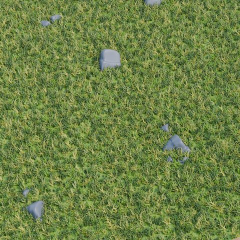 Поляна | 1 | Обычная простая клетка. | Не требуется. |
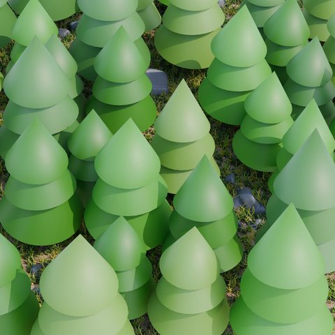 Тайга | 1 | Скрытая местность: соседние закрытые клетки вокруг игрока автоматически не открываются. | Компас открывает соседние клетки вокруг владельца и снимает скрытость тайги. |
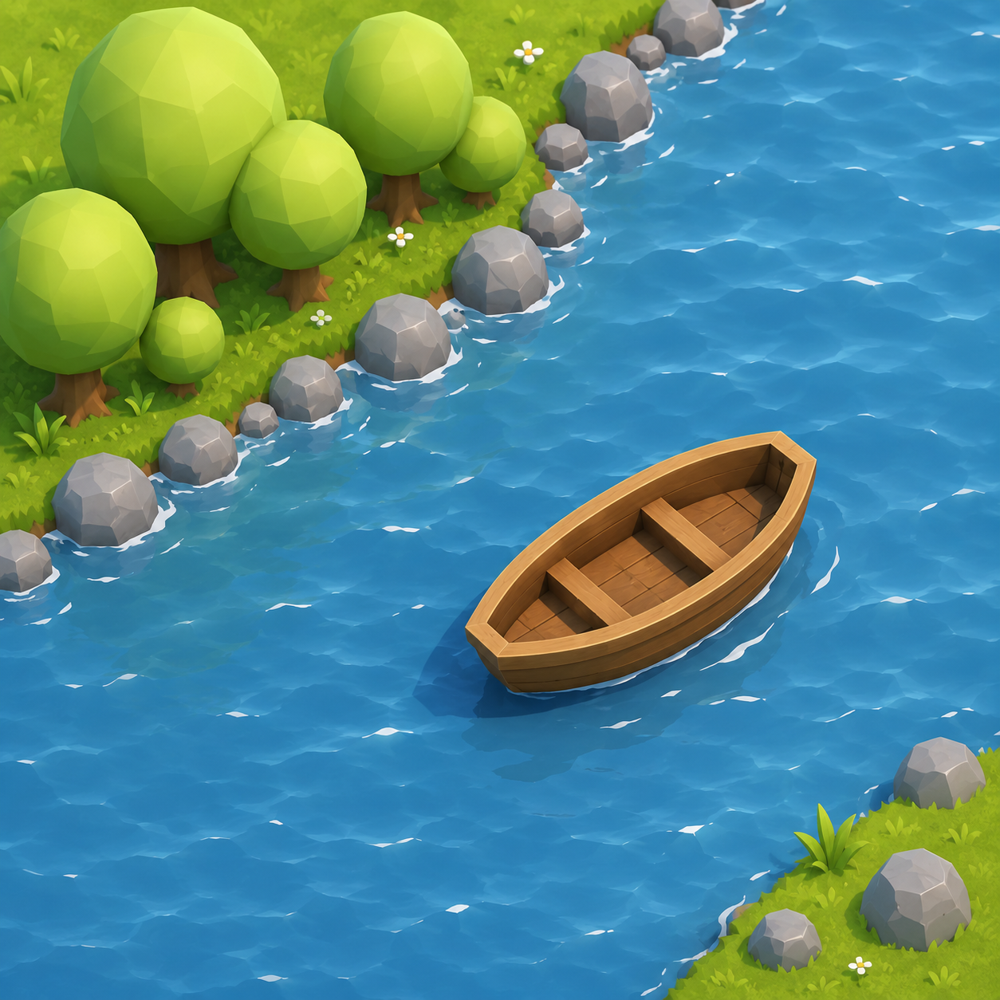 Ручей | 2 | Переправа стоит дороже обычной клетки. | Плавсредство снижает стоимость до 1. |
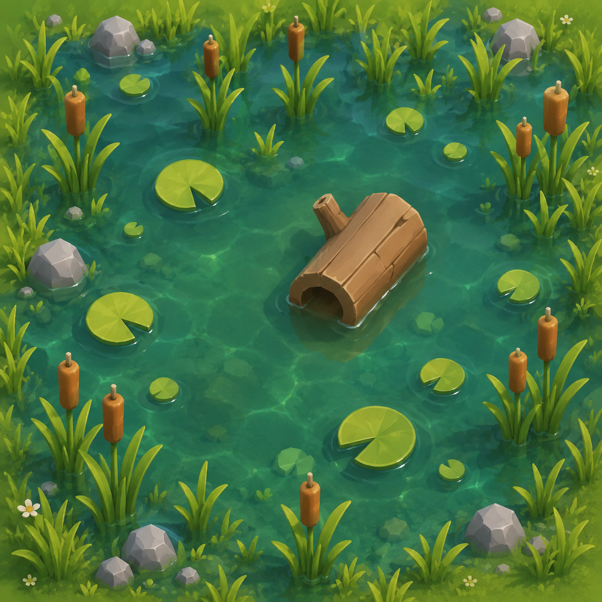 Болото | 6 | Вход только на натуральной 6, если нет снаряжения или способности Исследователя. | Снаряжение снижает стоимость до 2. Исследователь раз за ход игнорирует один эффект сложной местности. |
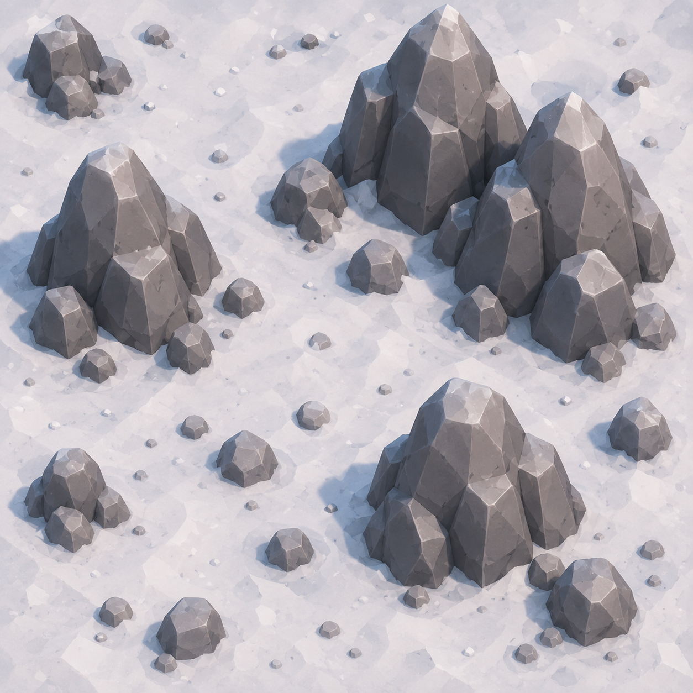 Подъём | 6 | После входа на подъём ход участника заканчивается. Есть небольшой шанс получить усталость. | Натуральная 6 не требуется, но нужно 6 очков движения. Исследователь после входа может игнорировать один эффект сложной местности. |
| Цель 1: гора Зелёная | 4 | Ключевая горная клетка. Каждый участник должен посетить её перед финишем. | Считается горной целью маршрута, но стоит 4 очка движения. |
| Цель 2: Мустаг | 6 | Финальная горная клетка. Участник завершает маршрут, если уже посетил гору Зелёную. | Стоимость входа — 6 очков движения. |
7. Погода
В начале каждого раунда тянется одна погода. Она действует на всю команду до следующего раунда.
| Погода | Эффект | Как защититься |
|---|---|---|
| Ясно | Первый шаг каждого участника в раунде получает +1. | Это бонус, защиты не нужно. |
| Облачно | Нет эффекта. | Не требуется. |
| Дождь | Болото и подъём стоят на 1 очко дороже. | Хранитель лагеря может отменить погоду на раунд. |
| Жара | Если игрок начинает бросок на открытой местности без головного убора, шаг уменьшается на 1. Минимум остаётся 1. | Головной убор. |
| Ветер | Нельзя вернуться на клетку, с которой игрок только что пришёл. | Планируйте маршрут заранее. |
| Туман | После броска игрок получает на 1 очко движения меньше. Минимум — 1. | Хранитель лагеря может отменить погоду на раунд. |
8. Роли участников
У каждой роли есть постоянная логика и особое действие. Особые действия ограничены, поэтому их стоит использовать в нужный момент.
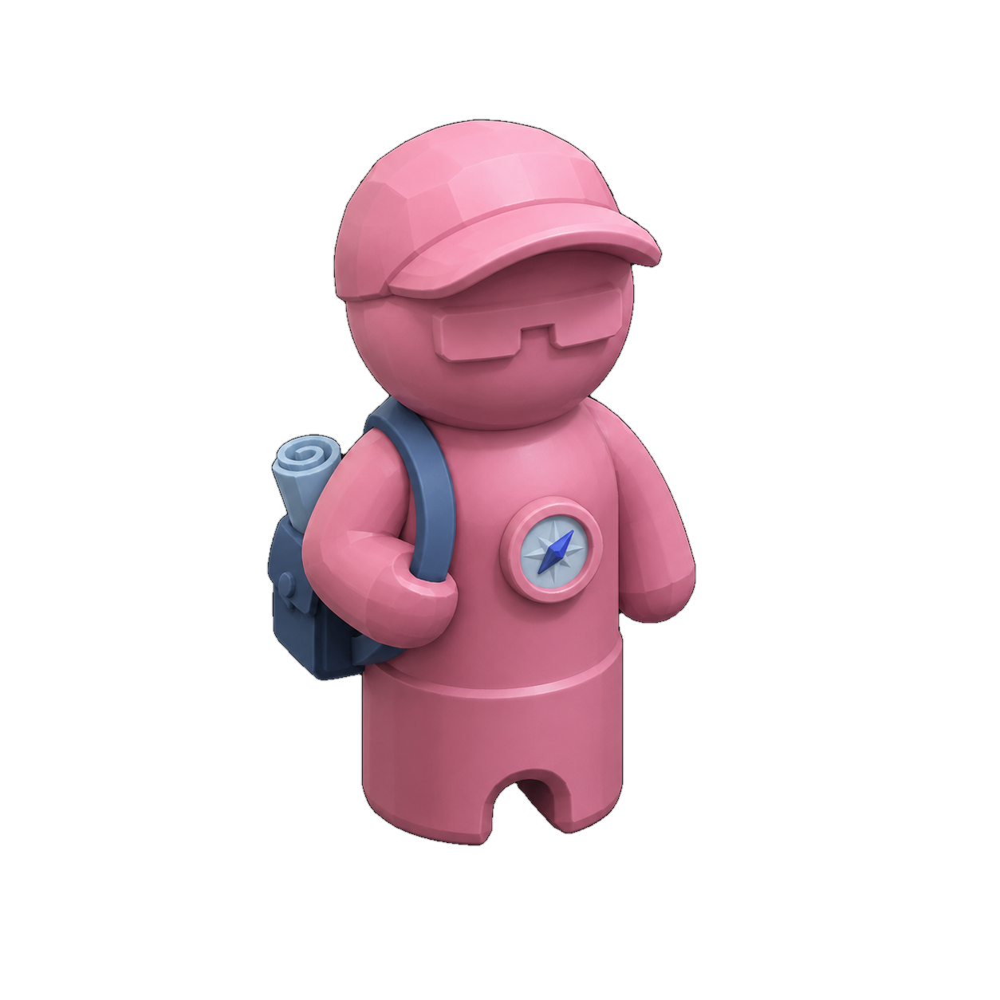
Разведчик
Постоянно: в начале хода открывает соседнюю закрытую клетку.
Особое: «Быстрый марш» — один раз за партию добавляет второй бросок к текущему шагу.
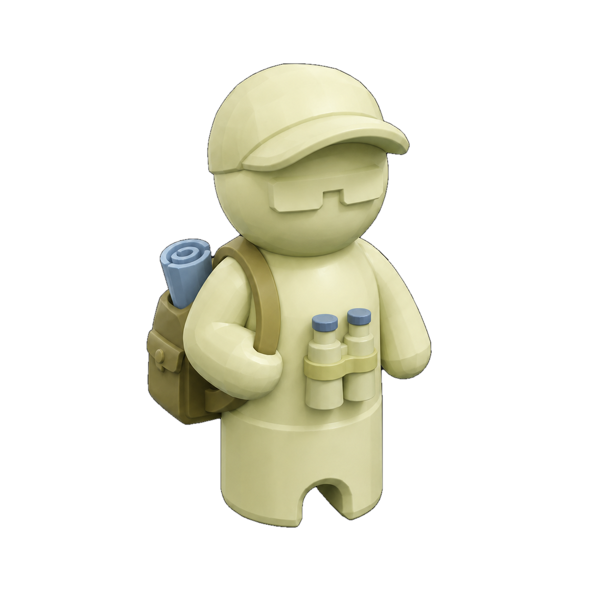
Исследователь
Постоянно: раз в свой ход игнорирует один эффект сложной местности.
Особое: «Разведка карты» — один раз открывает любую закрытую клетку.
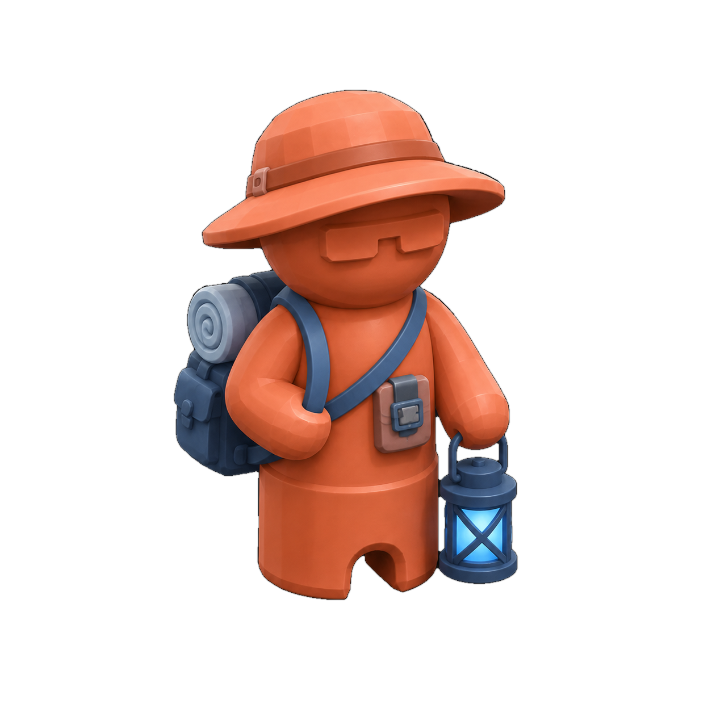
Хранитель лагеря
Постоянно: в начале хода снимает усталость с одного участника, если она есть.
Особое: «Тёплый привал» — один раз отменяет погоду до конца раунда.
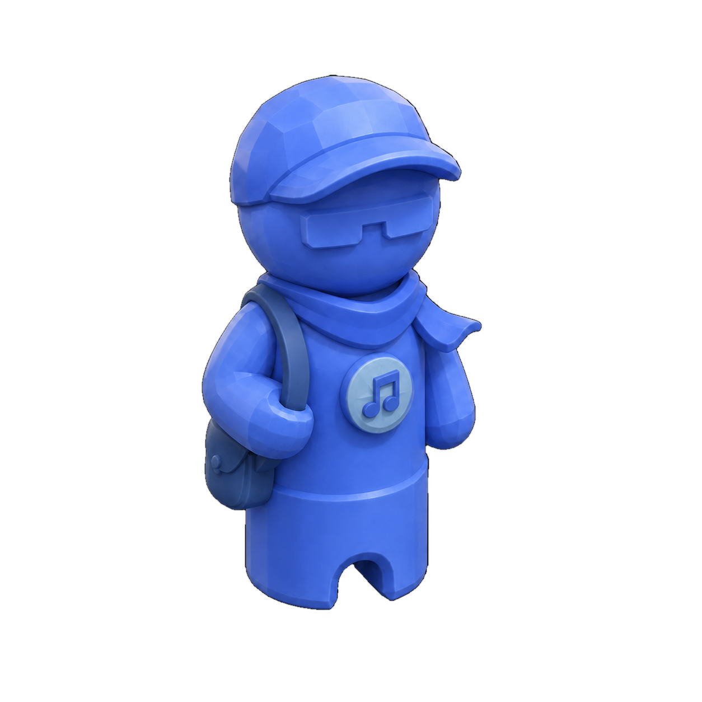
Хранитель атмосферы
Постоянно: раз в раунд даёт +1 к следующему броску другому участнику.
Особое: два раза за партию отменяет негативный эффект у выбранного игрока.
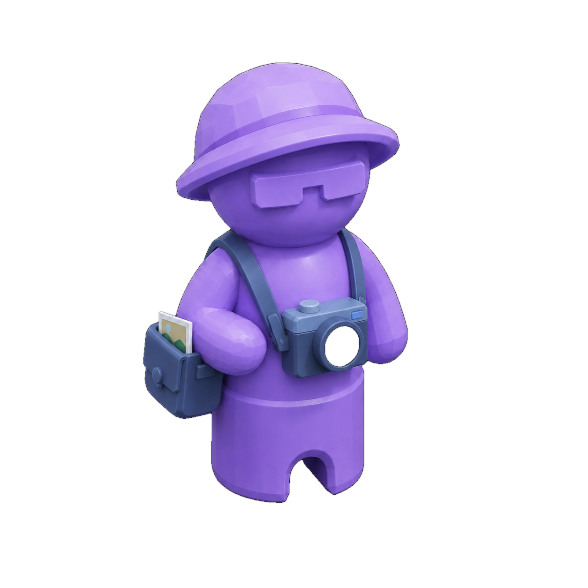
Хранитель впечатлений
Постоянно: открытие новых клеток приносит больше жетонов истории.
Особое: «Памятный кадр» — один раз тратит 3 жетона истории и даёт командный бонус к следующим броскам.
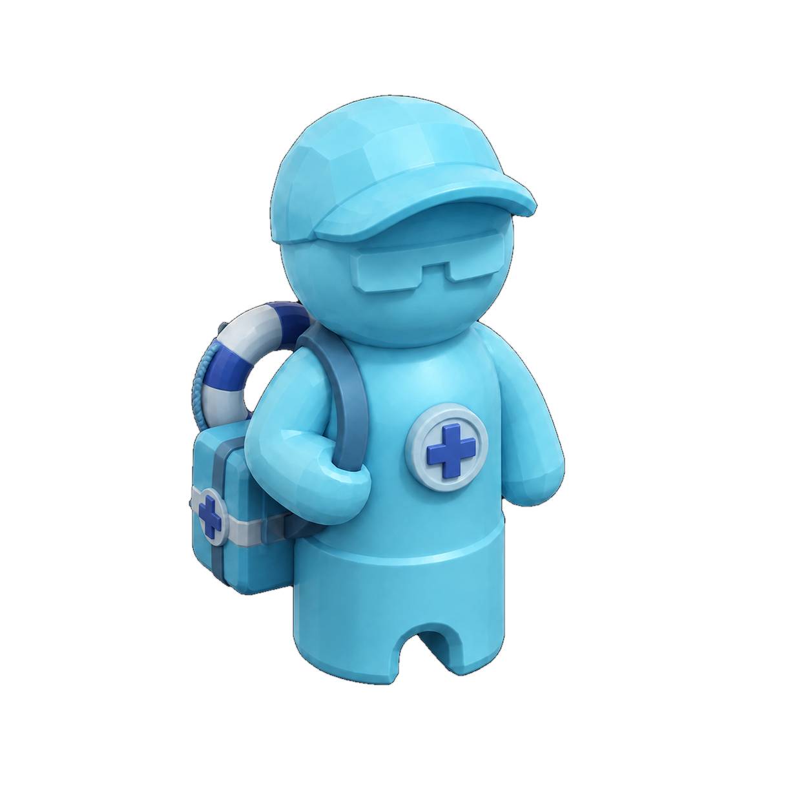
Спасатель
Постоянно: в начале своего хода отменяет усталость у любого участника, если она есть.
Особое: «Спасательная операция» — один раз перемещает любого участника на соседнюю открытую клетку. На старте несёт снаряжение.
9. Артефакты
Артефакты лежат на карте. Когда игрок заходит на клетку с артефактом, он автоматически забирает его.
| Артефакт | Эффект | Кому особенно полезен |
|---|---|---|
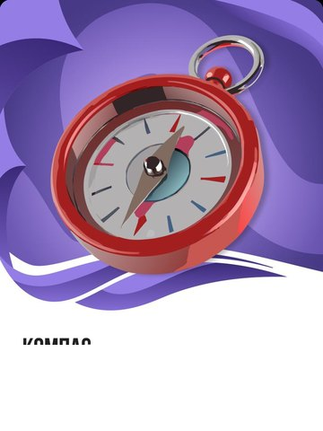 Компас | Открывает соседние клетки вокруг владельца и позволяет видеть соседей в тайге. | Любому игроку на краю неизвестной зоны. |
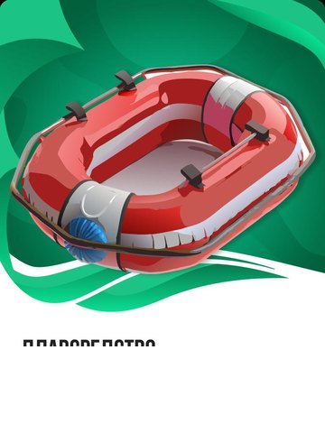 Плавсредство | Ручей стоит 1 очко вместо 2. | Игроку, который прокладывает путь через воду. |
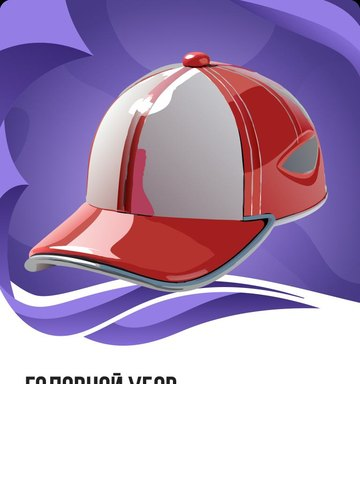 Головной убор | Игнорирует штраф жары. | Игроку, которому нужно далеко идти в текущем раунде. |
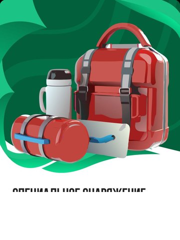 Снаряжение | Болото стоит 2 очка вместо 6. | Игроку рядом с болотами или сложной центральной частью карты. |
10. Кооперация и обмен
Игра рассчитана на совместное прохождение. Главный кооперативный механизм — обмен артефактами.
- В ход активного игрока нажмите «Обмен».
- Выберите участника, которому хотите помочь.
- Выберите артефакт для передачи.
- Артефакт сразу переходит к выбранному участнику.
Пример: Спасатель несёт снаряжение, но до болота первым дошёл Разведчик. Спасатель передаёт снаряжение Разведчику, и команда проходит сложный участок быстрее.
11. Финал и рейтинг
Партия заканчивается, когда все участники дошли до Мустагa после посещения горы Зелёной.
| Рейтинг | Условие |
|---|---|
| ⭐⭐⭐ | Команда завершила маршрут за 8 раундов или быстрее. |
| ⭐⭐ | Команда завершила маршрут за 9–12 раундов. |
| ⭐ | Команда завершила маршрут за 13 или больше раундов. |
Проигрыша нет. Если команда идёт медленно, она всё равно может завершить поход, просто получит меньше звёзд.
12. Состав игры
Есть
- поочерёдный режим на одном устройстве;
- 2–6 участников;
- 3 размера карты: 4×4, 5×5 и 6×6;
- 5 типов местности;
- 6 ролей;
- 6 погодных эффектов;
- 4 артефакта;
- обмен артефактами;
- промежуточная и главная цель;
- финал со звёздами и историей.